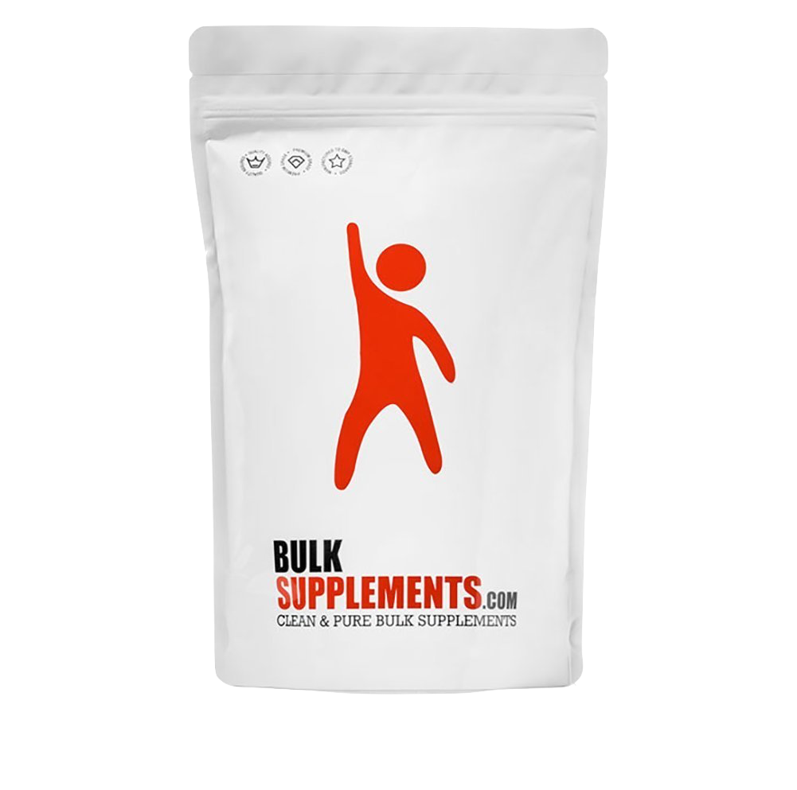

Creatine Monohydrate Powder Only $10 to DOUBLE your muscle gain!

00
09
59
Hours
Minutes
Seconds
Train Harder and Longer
Combined with a healthy diet and regular workout, this potent creatine supplement promises remarkable fitness benefits:
Massive muscle growth
High intensity Energy and Focus
Top endurance
Enhanced muscle pumps
Explosive speed
Increased overall athletic performance
Lab-Tested, High Performance Formula That You Can Trust
• SKYROCKET SIZE & STRENGTH: Are you looking for an effective, pure creatine supplement that will support your muscular endurance and help you push out more reps at the gym? Perfect for pre/post- bodybuilding workout or strength training, this advanced creatine powder formula will fuel your muscles during high-intensity exercise and help you reach your fitness goals faster than ever before!
• INCREASE SPEED FOR EXPLOSIVE WORKOUTS: Micronized creatine monohydrate is essential in the process of sending energy directly to muscles and has been shown to help increase overall muscle mass and boost strength and speed, making it extremely helpful for explosive sports like boxing, bodybuilding or powerlifting.
• BEST VALUE FOR MONEY: If you’re looking for the best micronized creatine monohydrate powder supplement that combines a high performance formula with a jaw-dropping price, then look no further. Unlike most other creatine powder supplements on the market, this micronized creatine monohydrate formula offers massive muscle gains without breaking the bank.
• LAB-TESTED QUALITY: Stop wasting tons of money on unreliable, ineffective products that just don’t work. Trust in this lab-tested, verified and 99.99% purity guaranteed micronized creatine monohydrate powder that delivers on its promises.
• VEGAN FRIENDLY: Are you on a vegan diet? BulkSupplements pure micronized creatine monohydrate bodybuilding/crossfit supplement contains no dairy or dangerous/unecessary additives and is sugar, soy, yeast and gluten-free, so you can use it with peace of mind.